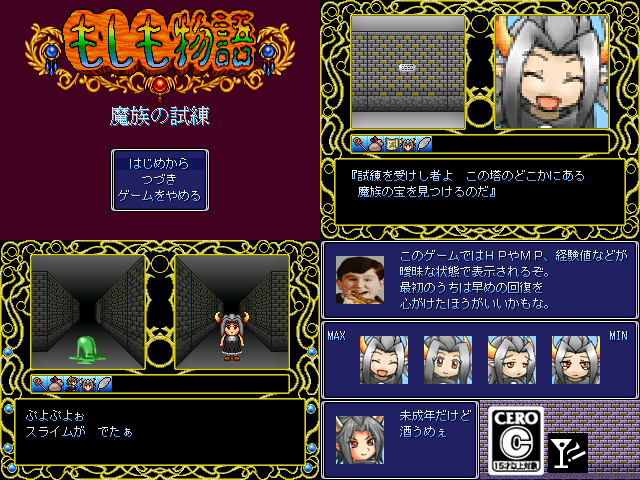

作品紹介
| ≪ Back | トップページ | 作品一覧 | Next ≫ |
| No059. - もしも物語 ～魔族の試練～ |

| 使用ツール：2000 |
| 作者：中の外の人 |
| ジャンル：３ＤダンジョンＲＰＧ |
| 動画・配信：○ |
|
今は亡きコンパイルが作った隠れた名作ＲＰＧ『魔導物語』を もしも風にアレンジして作ってみました。 魔導物語のウリである『ファジーパラメータ』や『マジカルボイス』、『オートマッピング』も しっかりと再現してあります。 ※カーバンクルは出ません 大変お待たせいたしました。 後はバグが出ないことを祈るだけです。 |
| 管理人コメント：『Kirby's Avalanche』もれっきとしたコンパイルのゲームなんだよね |
| ダウンロード(9.1MB) ① ② / 感想掲示板 ツイート |
更新情報・お知らせ
- 2012/01/15
- 本体修正 パッチ追加
- 2012/01/02
- 本体修正 パッチ追加
- 2011/12/26
- 本体修正 パッチ追加
- 2011/12/26
- 遅刻提出 SS コメント変更
- 2011/12/05
- エントリー